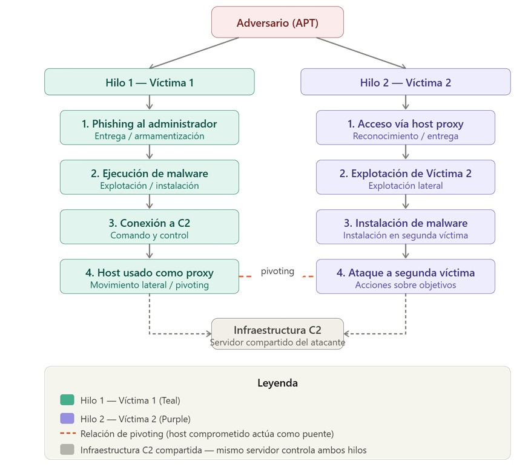

ANÁLISIS DE INTRUSIONES CON EL MODELO DE DIAMANTE
Actividad 18 | Equipo 02
01 Introducción
La ciberseguridad moderna enfrenta un panorama de amenazas en constante evolución, donde los ataques dirigidos ya no pueden analizarse como eventos aislados. La sofisticación de los grupos de amenazas persistentes avanzadas (APT, por sus siglas en inglés) exige marcos analíticos que permitan correlacionar evidencia técnica, comprender la intención del adversario y anticipar patrones de comportamiento futuros. En este contexto, el Modelo Diamante de Análisis de Intrusiones emerge como una herramienta fundamental para los equipos de respuesta a incidentes y los analistas de inteligencia de amenazas.
Propuesto por Caltagirone, Pendergast y Betz en 2013, el Modelo Diamante ofrece una estructura conceptual que descompone cualquier evento de intrusión en cuatro elementos interrelacionados: el adversario, la capacidad técnica empleada, la infraestructura utilizada y la víctima objetivo. Esta representación no sólo facilita el análisis forense de un incidente individual, sino que también permite construir hilos de actividad que revelan campañas coordinadas, pivoting entre víctimas y el modus operandi del atacante a lo largo del tiempo.
La presente actividad aplica el Modelo Diamante sobre un escenario realista de intrusión, complementando el análisis con la Cadena de Eliminación Cibernética (Cyber Kill Chain) de Lockheed Martin y las tácticas, técnicas y procedimientos documentados en el framework MITRE ATT&CK. El objetivo es demostrar cómo la integración de estos marcos metodológicos produce un entendimiento profundo y estructurado del comportamiento del adversario, condición indispensable para una defensa informada y proactiva.
02 Marco Teórico
2.1 El Modelo Diamante de Análisis de Intrusiones
El Modelo Diamante (Caltagirone et al., 2013) parte de un axioma central: todo evento de intrusión cibernética puede ser representado como la relación entre un adversario que utiliza una capacidad sobre una infraestructura para afectar a una víctima. Esta relación forma la figura de un diamante cuyos vértices son los cuatro elementos fundamentales del modelo, y cuyos ejes codifican la dirección de la actividad maliciosa.
A diferencia de los modelos puramente procedimentales, el Modelo Diamante adopta una perspectiva centrada en el adversario. Esto significa que el eje analítico no es la secuencia técnica del ataque, sino la relación entre quien ataca, con qué lo hace, desde dónde y a quién. Esta orientación permite trasladar el análisis desde la simple detección de indicadores de compromiso (IoC) hacia la comprensión del comportamiento del atacante, lo cual es significativamente más robusto frente a la rotación de infraestructura y herramientas que caracteriza a los grupos APT.
2.1.1 Elementos del modelo
Adversario: Corresponde al actor de amenaza; puede ser un individuo, un grupo organizado o un estado-nación. Incluye tanto al operador (quien ejecuta el ataque) como al patrocinador (quien lo financia o dirige). La identificación del adversario es el elemento más difícil de establecer con certeza, razón por la cual el modelo permite el análisis incluso cuando este vértice permanece parcialmente desconocido.
Capacidad: Se refiere al arsenal técnico del adversario: malware, exploits, herramientas de post-explotación y en general cualquier método o procedimiento empleado para comprometer al objetivo. Las capacidades son analizadas en términos de sus características técnicas (firmas, comportamiento, persistencia) para correlacionarlas con otros eventos o campañas conocidas.
Infraestructura: Comprende los recursos físicos y lógicos usados para sostener el ataque: dominios maliciosos, servidores de Comando y Control (C2), direcciones IP, cuentas comprometidas utilizadas como intermediarios. El modelo distingue entre infraestructura de tipo 1 (controlada directamente por el adversario) e infraestructura de tipo 2 (recursos de terceros comprometidos para ser usados como relevo o anonimización).
Víctima: Es el objetivo del evento de intrusión. Puede ser una persona, un sistema, una red o una organización. El modelo distingue entre víctima persona (target) y víctima activo (asset), reconociendo que el verdadero objetivo del adversario puede ser el activo de información dentro del sistema, no el sistema en sí mismo.
2.1.2 Metacaracterísticas del evento
Además de los cuatro vértices, el modelo incorpora seis metacaracterísticas que enriquecen la descripción de cada evento: marca de tiempo (timestamp), fase dentro de la cadena de ataque, resultado obtenido por el adversario, dirección del evento (desde adversario hacia víctima o viceversa), metodología empleada y recursos requeridos. Estas metacaracterísticas transforman el análisis de un simple registro de eventos en una descripción estructurada que puede ser comparada, clasificada y correlacionada sistemáticamente (Caltagirone et al., 2013).
2.1.3 Hilos de actividad y grafos de actividad
Una de las contribuciones más valiosas del Modelo Diamante es el concepto de hilo de actividad (activity thread). Un hilo representa la secuencia ordenada de eventos de intrusión que corresponde a una campaña contra un objetivo específico. Cuando el adversario expande su ataque a múltiples víctimas —típicamente mediante pivoting desde un host comprometido— se generan múltiples hilos interrelacionados que forman un grafo de actividad. Este grafo revela patrones de movimiento lateral, reutilización de infraestructura y técnicas de persistencia que serían invisibles si los eventos se analizaran de manera aislada.
2.2 La Cyber Kill Chain
Desarrollada por Hutchins, Cloppert y Amin (2011) en Lockheed Martin, la Cyber Kill Chain describe las siete fases secuenciales de un ataque dirigido: reconocimiento, armamentización, entrega, explotación, instalación, Comando y Control (C2), y acciones sobre objetivos. Su contribución principal es la idea de que interrumpir cualquier fase de la cadena rompe la capacidad del adversario para alcanzar su objetivo final.
La Kill Chain es complementaria al Modelo Diamante: mientras el diamante describe los actores y sus relaciones en cada evento, la Kill Chain ubica ese evento dentro de una progresión temporal. La combinación de ambos marcos permite responder tanto a «qué pasó y quién lo hizo» como a «en qué momento de la campaña ocurrió y qué oportunidad de interrupción existía».
2.3 MITRE ATT&CK y la inteligencia de amenazas
El framework MITRE ATT&CK (Adversarial Tactics, Techniques and Common Knowledge) documenta el comportamiento de adversarios reales en matrices organizadas por tácticas y técnicas. Su integración con el Modelo Diamante permite mapear las capacidades identificadas en un evento con TTPs específicos, facilitando la atribución, la priorización de defensas y la detección proactiva mediante reglas de detección basadas en comportamiento (MITRE ATT&CK, 2024).
Esta triada analítica —Modelo Diamante, Kill Chain y ATT&CK— constituye el estándar de facto para el análisis de intrusiones en contextos de Cyber Threat Intelligence (CTI), estableciendo un lenguaje común entre equipos de detección, respuesta a incidentes y análisis estratégico.
2.4 Pivoting y movimiento lateral en campañas APT
El pivoting es una técnica mediante la cual el adversario utiliza un sistema comprometido como trampolín para acceder a segmentos de red adicionales o a nuevas víctimas. Desde la perspectiva del Modelo Diamante, el pivoting genera un nuevo hilo de actividad en el que el host comprometido funciona como infraestructura de tipo 2: un recurso ajeno que el atacante ha cooptado para sus propósitos. Esta técnica es especialmente efectiva porque el tráfico malicioso emerge de direcciones IP internas con aparente legitimidad, eludiendo controles perimetrales como firewalls y sistemas de detección de intrusiones basados en reputación (NIST, 2018).
La detección del movimiento lateral requiere análisis de comportamiento de red (NBA), correlación de logs y supervisión de autenticaciones laterales (pass-the-hash, pass-the-ticket, uso de credenciales legítimas en horarios atípicos). La construcción de hilos de actividad mediante el Modelo Diamante es una herramienta privilegiada para identificar estos patrones, ya que la reutilización de infraestructura C2, la similitud en las capacidades y la coincidencia temporal entre eventos forman una firma de campaña difícil de ofuscar completamente.
03 Comprensión del modelo — Tabla conceptual
| Elemento | Descripción | Ejemplo práctico |
|---|---|---|
| Adversario | Actor malicioso que lleva a cabo el ataque (individuo o grupo APT) | Grupo APT28 (Fancy Bear), atacante de estado-nación |
| Capacidad | Herramientas, técnicas y procedimientos (TTPs) del atacante | Malware tipo RAT, exploit de vulnerabilidad zero-day en Office |
| Infraestructura | Recursos físicos o lógicos usados para ejecutar el ataque (servidores C2) | Dominio malicioso update-srv.net, servidor VPS en Rusia |
| Víctima | Entidad objetivo del ataque; persona, sistema u organización | Empresa de infraestructura crítica; equipo Windows de empleado |
04 Análisis de evento (modelo Diamante)
| Metacaracterísticas | Descripción del evento |
|---|---|
| Marca del tiempo | Momento en que los logs registran conexiones salientes a IPs externas del C2 |
| Fase | Comando y Control (C2) — Kill Chain fase 6; el malware ya fue instalado y establece canal con el servidor del atacante |
| Resultado | Múltiples hosts comprometidos, canal C2 activo, posible exfiltración de datos o movimiento lateral en progreso |
| Dirección | Adversario → Infraestructura (C2) → Víctima (red interna comprometida) |
| Metodología | Malware con dominio C2 embebido; resolución DNS hacia IPs externas; pivoting desde hosts infectados hacia nuevos objetivos |
| Recursos | Dominios C2, IPs externas (VPS), WHOIS, logs de red, herramienta de análisis DNS |
¿Quién es el adversario? Un actor de amenaza externo (posiblemente un grupo APT), identificado indirectamente a través de WHOIS/IP que revela un posible origen geográfico del atacante.
¿Cuál es la capacidad utilizada? Malware con módulos de Comando y Control (C2) embebidos, capaz de resolver dominios y establecer conexiones persistentes hacia servidores externos.
¿Qué tipo de infraestructura se emplea? Infraestructura de tipo 2 (controlada por el atacante): dominios maliciosos y servidores VPS externos a los cuales el malware reporta.
¿Quién es la víctima primaria? La organización cuyo equipo detectó el malware inicialmente; los hosts que muestran tráfico anómalo hacia las IPs externas.
¿Existe evidencia de movimiento lateral? Sí. Los logs muestran múltiples hosts conectándose a las mismas IPs externas del C2, lo que indica que el malware se propagó desde el vector inicial hacia otros equipos de la red.
05 Relación con la Kill Chain
| Evento | Fase Kill Chain |
|---|---|
| Detección de malware | Fase 5 — Instalación: el malware ya fue depositado y ejecutado en el sistema víctima |
| Envío de phishing | Fase 2 — Armamentización / Fase 3 — Entrega: correo malicioso como vector de entrega inicial |
| Conexión a C2 | Fase 6 — Comando y Control (C2): canal de comunicación con el atacante establecido |
| Ejecución de malware | Fase 6 — Comando y Control (C2): canal de comunicación con el atacante establecido |
06 Hilos de actividad

Figura 1: Representación de Hilos de Actividad
Descripción de los hilos
Hilo 1 (Víctima 1): El adversario envía un correo de phishing dirigido al administrador → el destinatario abre el adjunto malicioso y ejecuta el malware → el malware establece canal C2 con el servidor del atacante → el host comprometido empieza a ser usado como proxy para atacar internamente.
Hilo 2 (Víctima 2): Usando el host de Víctima 1 como trampolín (pivoting), el adversario accede a Víctima 2 desde una IP interna confiable → explota vulnerabilidades del nuevo objetivo → instala malware en el segundo sistema → ejecuta acciones finales (exfiltración, reconocimiento adicional, etc.).
Relación de pivoting: Víctima 1 comprometida actúa como proxy interno, lo que le permite al atacante evadir controles perimetrales y atacar a Víctima 2 desde una dirección IP interna de confianza. Ambos hilos comparten la misma infraestructura C2.
07 Evidencia Multimedia
08 Conclusión y reflexión técnica
Desde una perspectiva técnica, el análisis del escenario presentado demuestra con claridad la utilidad operacional del Modelo Diamante como marco de inteligencia de amenazas. La detección inicial del malware no constituye el fin del proceso analítico, sino su punto de partida. Al descomponer el incidente en sus cuatro vértices adversario, capacidad, infraestructura y víctima y enriquecerlo con las seis metacaracterísticas, el analista obtiene una representación estructurada que trasciende el indicador de compromiso individual y revela la arquitectura de la campaña.
La integración del Modelo Diamante con la Cyber Kill Chain revela que, en el escenario analizado, el adversario alcanzó al menos la fase 6 (Comando y Control) y presentó indicios claros de transición hacia la fase 7 (acciones sobre objetivos) a través del movimiento lateral. Desde el punto de vista defensivo, esto implica que la ventana para contener el incidente antes de una exfiltración significativa de información era estrecha, subrayando la importancia de la detección temprana en fases previas de la cadena.
El concepto de pivoting, central en la construcción del segundo hilo de actividad, ilustra una limitación crítica de las defensas perimetrales convencionales: una vez que el adversario opera desde el interior de la red, la confianza implícita en el tráfico interno se convierte en un vector de propagación. Este hallazgo refuerza la necesidad de arquitecturas de seguridad basadas en el principio de mínimo privilegio y confianza cero (Zero Trust), en las cuales ningún segmento de red es considerado inherentemente seguro.
En conclusión, el Modelo Diamante no es simplemente un instrumento de documentación forense; es un marco que transforma la evidencia técnica en inteligencia accionable. Su fortaleza reside en la capacidad de correlacionar eventos aparentemente dispersos bajo una lógica de campaña, atribuir comportamiento con grados razonables de confianza y, críticamente, anticipar los próximos movimientos del adversario antes de que estos se materialicen. Adoptado como práctica estándar dentro de un programa de Cyber Threat Intelligence maduro, constituye un diferenciador sustancial en la capacidad organizacional para resistir y responder a amenazas avanzadas.
09 Referencias Técnicas
Caltagirone, S., Pendergast, A., & Betz, C. (2013). The diamond model of intrusion analysis. Center for Cyber Intelligence Analysis and Threat Research. https://www.threatintel.academy/wp-content/uploads/2020/07/diamond-model.pdf
Hutchins, E. M., Cloppert, M. J., & Amin, R. M. (2011). Intelligence-driven computer network defense informed by analysis of adversary campaigns and intrusion kill chains. Lockheed Martin Corporation. https://lockheedmartin.com/content/dam/lockheedmartin/rms/documents/cyber/LM-White-Paper-Intel-Driven-Defense.pdf
MITRE ATT&CK. (2024). ATT&CK framework: Tactics, techniques and procedures. The MITRE Corporation. https://attack.mitre.org/
National Institute of Standards and Technology. (2018). Framework for improving critical infrastructure cybersecurity (Version 1.1). U.S. Department of Commerce. https://doi.org/10.6028/NIST.CSWP.04162018
Pols, P. (2017). The unified kill chain: Raising resilience against advanced cyber attacks. Cyber Security Academy. https://www.unifiedkillchain.com/assets/The-Unified-Kill-Chain.pdf